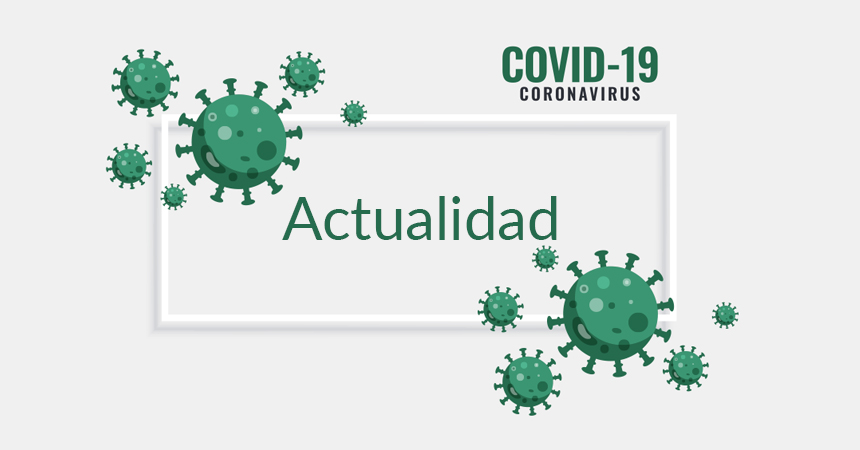

Covid 19 últimas noticias

La transmisión de Ómicron sigue aumentando y el Ministerio de Sanidad informó este martes de 52.218 nuevos casos de Covid-19 desde el viernes. La incidencia en mayores de 60 años en 851 casos por cada 100.000 habitantes en 14 días, un aumento considerable ya que el viernes fueron 765.
Estos datos se reflejan ya en la presión hospitalaria, con una tasa de ocupación del 7,79 por ciento, el pasado martes, subiendo así desde los 6,67 por ciento registrados el viernes.
La OMS vuelve a pedir a los países que vacunen al 70% de la población para garantizar la inmunidad
El director general de la Organización Mundial de la Salud (OMS), Tedros Adhanom Ghebreyesus, ha vuelto a pedir a los países vacunar contra el coronavirus al 70 por ciento de la población para garantizar la barrera de la inmunidad. En rueda de prensa, Tedros ha avisado de que en las últimas semanas los casos de contagio de Covid-19 se han incrementado un 20 por ciento y en tres de las seis regiones de la OMS están aumentando las muertes por esta causa.
"La pandemia está cambiando pero no ha finalizado. Sigue en curso", ha avisado el dirigente del organismo de Naciones Unidas, para informar de que en los últimos 18 meses se han distribuido más de 12.000 millones de dosis de vacunas, el 75 por ciento de los profesionales sanitarios y de las personas mayores de 60 años están vacunadas y estos instrumentos han permitido salvar la vida de 20 millones de personas.
Baleares pide a la población que se ponga la tercera dosis contra el Covid-19 ante la séptima ola
La consellera de Salud y Consumo, Patricia Gómez, ha recordado a la población la importancia de ponerse la tercera dosis de la vacuna contra el Covid-19 ante la séptima ola de la enfermedad en Baleares.
En declaraciones a los medios después de asistir a una visita en la Unidad Básica de Salud en El Molinar, la consellera ha detallado que la mayoría de centros hospitalarios de las Islas tienen pacientes por covid y con covid. "Estos últimos son los que se hacen PCR por alguna prueba o intervención quirúrgica, dan positivo pero no tienen síntomas", ha reseñado. Además de desgranar los datos de la incidencia acumulada en las islas a 14 días, que se mantiene por debajo de la media nacional, Gómez ha resaltado que "en ningún momento se debe bajar la guardia" ante la enfermedad porque uno de los últimos fallecidos por covid fue una persona de 45 años.
El exprimer ministro japonés, premiado por organizar los Juegos Olímpicos durante el Covid-19
La Universidad Camilo José Cela (UCJC) española ha aprobado conceder la medalla de oro al exprimer ministro japonés, Yoshihide Suga, por su labor como promotor de la organización y celebración de los Juegos Olímpicos y Paralímpicos de Tokio 2020 durante la pandemia.
Esta distinción honorífica, propuesta por la Cátedra Olímpica Marqués de Samaranch de la universidad y otorgada por el Consejo de Gobierno de la UCJC, ha reconocido el trabajo de Suga durante los Juegos, que reunieron el pasado verano, en la capital nipona, a más de once mil atletas.
Las vacunas contra el coronavirus podrían perder el 99% de eficacia según un investigador español
El investigador valenciano Luis Enjuanes asegura que los nuevos fármacos contra el coronavirus tendrían que administrarse por vía nasal, dado que por vía intramuscular presentan una ‘corta duración’ que obliga a administrar dosis de refuerzo. Enjuanes ha confiado en que el suministro de la vacuna contra la gripe de manera intranasal, en países como Estados Unidos contribuirá a que la vacuna contra el Covid-19 se suministre de esta manera, aunque por ahora no hay ninguna de estas características autorizada. Ha indicado que, en los países más avanzados, ya se está administrado la vacuna contra la gripe de manera intranasal, algo que califica como ‘absolutamente esencial, porque si no perdemos el 99,9 por ciento de la potencia’.
La Junta de Castilla y León pide 'prudencia' ante el aumento de contagios de covid
El portavoz de la Junta de Castilla y León, Carlos Fernández Carriedo, ha reconocido este jueves que se está produciendo un aumento de casos positivos de covid. En su opinión es pronto para hablar de una séptima ola, sin embargo, ha apelado a la responsabilidad ciudadana para prevenir contagios. Carriedo también ha reconocido que un incremento en la incidencia acumulada siempre conlleca una replica en los ingresos hospitalarios y en los fallecimientos vinculados a esta infección, aunque ha recalcado que actualmente se observa una traslación inferior a la de anteriores olas.
La posición del paciente intubado no mejora su tratamientro frente al covid
La posición boca abajo no ofrece beneficios en la reducción de la intubación en insuficiencia respiratoria por COVID-19. Un gran ensayo clínico aleatorizado multicéntrico no ha revelado diferencias en el riesgo de necesidad de intubación endotraqueal a los 30 días. Dada la falta derecursos durante los peores meses de la pandemia, se adoptó como intervención para pacientes con insuficiencia respiratoria. Cuando un paciente está acostado boca abajo, la parte posterior del pulmón no se comprime. Sin embargo, al contrario de lo que se pensaba no mejora la oxigenación general dentro de los pulmones.
La infectividad del SARS-CoV-2 en aire podría disminuir un 90%
El virus del SARS-CoV-2 puede perder el 90 por ciento de su infectividad cuando se encuentra en partículas de aerosol, según los nuevos hallazgos de la Universidad de Bristol (Reino Unido). El estudio, publicado en la revista científica 'Proceedings of the National Academy of Sciences' (PNAS), es el primero que investiga la disminución de la infectividad del SARS-CoV-2 en partículas de aerosol durante periodos que van de segundos a unos minutos. El objetivo del estudio era explorar el proceso que podría cambiar la infectividad viral en escalas de tiempo cortas tras la exhalación.
inicio-
actualidad-
estadistica
|